Architecture and Builds#
Note
This page is supplementary material for the NIST SP 1800-35 publication.
In the General ZTA Reference Architecture section we present a general ZTA based on NIST SP 800-207 and describe its components and operation. This architecture is general enough that it applies to all deployment approaches: EIG, SDP, microsegmentation, and SASE. The components in the general ZTA may be operated as either on-premises or cloud-based services.
In the EIG Crawl Phase Reference Architecture section we describe a constrained version of this general ZTA that we call the EIG crawl phase reference architecture. Three of the ZTA builds that are documented in this practice guide are instantiations of this EIG crawl phase reference architecture. This architecture relies mainly on ICAM and endpoint protection platform (EPP) components, does not include any components that are specifically dedicated to providing PE or PA functionality, and is currently limited to protecting on-premises resources.
In the EIG Run Phase section we describe a second version of the general ZTA that we call the EIG run phase reference architecture. Three of the ZTA builds that are documented in this practice guide are instantiations of this EIG run phase reference architecture. Like the EIG crawl phase architecture, the EIG run phase architecture bases resource access decisions mainly on information provided by ICAM and EPP components. However, unlike the EIG crawl phase architecture, it may include PA and PE components that are not furnished by the ICAM provider. The EIG run phase architecture also protects both on-premises and cloud resources, and it supports device discovery and the establishment of tunnels between requesting endpoints and resources.
In the SDP, Microsegmentation, and SASE Builds section we list the builds that are based on the SDP, microsegmentation, and/or SASE deployment models.
In the ZTA Laboratory Physical Architecture section we describe the physical architecture of the baseline laboratory environment in which we implemented all of the builds documented in this guide.
In the Phase 0 Baseline Security Capability Deployment section we describe the set of Phase 0 security analytics tools that we deployed to augment the set of shared services and conventional security tools that were deployed as part of our baseline environment.
This documentation will be updated throughout the project lifecycle as the architecture evolves to include additional functionalities, security capabilities, and builds.
General ZTA Reference Architecture#
Figure 1 depicts the high-level logical architecture of a general ZTA reference design independent of deployment models. It consists of three types of core components: PEs, PAs, and PEPs, as well as several supporting components that assist the policy engine in making its decisions by providing data and policy rules related to areas such as ICAM, endpoint security, security analytics, data security, and resource protection. Specific capabilities that fall into each of these supporting component categories are discussed in more detail later in this section. The various sets of information either generated via policy or collected by the supporting components and used as input to ZTA policy decisions are referred to as policy information points (PIPs). Each of the logical components in the reference architecture does not necessarily directly correlate to physical (hardware or software) components. In fact, although the simplicity of the architecture may seem to imply that the supporting components are simple plug-ins that respond in real-time to the PDP, in many cases the ICAM, EDR/EPP, security analytics, and data security PIPs will each represent complex infrastructures. Some ZTA logical component functions may be performed by multiple hardware or software components, or a single software component may perform multiple logical functions.
Subjects (human users, devices, applications, servers, and other non-human entities that request information from resources) request and receive access to enterprise resources via the ZTA. Human subjects are authenticated. Non-human subjects are also authenticated. They are also protected by endpoint security. Enterprise resources may be located on-premises or in the cloud. Existing enterprise subjects and resources are not part of the reference architecture itself; however, any changes required to existing endpoints, such as installing ZTA agents, should be considered part of the reference architecture.
Figure 1 - General ZTA Reference Architecture
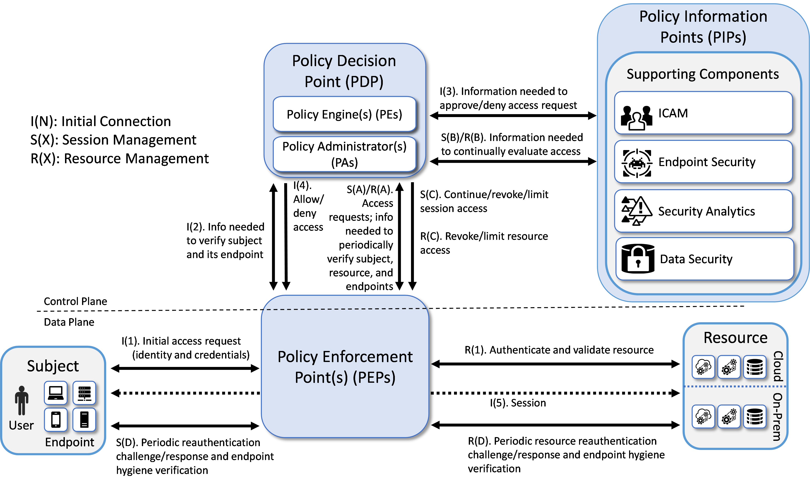
ZTA Core Components#
The types of ZTA core components are:
Policy Engine (PE): The PE handles the ultimate decision to grant, deny, or revoke access to a resource for a given subject. The PE calculates the trust scores/confidence levels and ultimate access decisions based on enterprise policy and information from supporting components. The PE executes its trust algorithm to evaluate each resource request it receives. The PE may be a single system or a federation of systems (i.e., a “system of systems”) that covers sectors of the ZTA. Each PE in the federation would be responsible for its sector based on the overall set of enterprise policies.
Policy Administrator (PA): The PA executes the PE’s policy decision by sending commands to the PEP to establish and terminate the communications path between the subject and the resource. It generates any session-specific authentication and authorization token or credential used by the subject to access the enterprise resource.
Policy Enforcement Point (PEP): The PEP guards the trust zone that hosts one or more enterprise resources. It handles enabling, monitoring, and eventually terminating connections between subjects and enterprise resources. It operates based on commands that it receives from the PA.
When combined, the functions of the PE and PA comprise a PDP. The PDP is where the decision as to whether or not to permit a subject to access a resource is made. The PIPs provide various types of telemetry and other information needed for the PDP to make informed access decisions. The PEP is the location at which this access decision is enforced.
Three approaches for how an enterprise can enact a ZTA for workflows can be supported by the architecture represented in Figure 1: use of EIG, microsegmentation, and SDP. If the microsegmentation approach is used, then when a subject is granted access to a resource, the PEP guarding that subject permits the subject to gain access to the unique network segment on which the resource resides. If the SDP approach is used, then when the PE decides to grant a subject access to a resource, the PA often acts like a network controller by setting up a secure channel between the subject and the resource via the PEP that is guarding that resource. SASE facilitates ZTA enforcement in cloud-based infrastructures.
ZTA Supporting Components#
ZTA supporting components are integral to other enterprise systems and provide information that the PE uses to make to ZTA policy decisions. The sets of information that are collected by the ZTA supporting components and used as input to ZTA policy decisions are referred to as PIPs. ZTA supporting components and policy information fall into the following categories:
ICAM: ICAM components include the strategy, technology, and governance for creating, storing, and managing subject (e.g., enterprise user) accounts and identity records and their access to enterprise resources. Aspects of ICAM include:
Identity management - Creation and management of enterprise user and device accounts, identity records, role information, and access attributes that form the basis of access decisions within an organization to ensure the correct subjects have the appropriate access to the correct resources at the appropriate time. This includes least privilege management, i.e., ensuring that the subject performing the access is given just enough privileges at the time they are needed to complete the task at hand and then removing those privileges to ensure that subjects do not have privileges that are not required. This concept can be characterized as just-enough and just-in-time access rights.
Access and credential management - Use of authentication (e.g., SSO and MFA) to verify subject identity and authorization to manage access to resources. This includes continuous access evaluation, i.e., repeatedly authenticating subjects and verifying their access to resources on an ongoing basis throughout an access session. This includes use of risk-based conditional access to trigger MFA when required to increase barriers against suspicious and unpermitted use and to reduce friction for low-risk permitted use.
Federated identity - Aggregation and correlation of all attributes relating to an identity or object that are required to authorize that identity or object for the requested access. It enables users of one domain to securely access data or systems of another domain seamlessly, and without the need for completely redundant user administration. Federated identity encompasses the traditional ICAM data, supports identities that may be part of a larger federated ICAM community, and may include non-enterprise employees. Guidelines for the use of federated identity are discussed in NIST SP 800-63C, Digital Identity Guidelines.
Identity governance - Use of policy-based centralized automated processes to manage user identity and access control functions (e.g., segregation of duties, role management, logging, access reviews, auditing, analytics, reporting) to ensure compliance with requirements and regulations.
Multi-factor authentication - Grant a user access to a resource only after successfully presenting two or more pieces of evidence (factors) to an authentication mechanism.
Endpoint Security
Endpoint Detection and Response (EDR)/Endpoint Protection Platform (EPP) - The strategy, technology, and governance to protect endpoints (e.g., servers, desktops, mobile phones, IoT devices, and other non-human devices) and their data from threats and attacks, as well as protect the enterprise from threats from managed and unmanaged devices. In some cases, extended detection and response (XDR) solutions may be used that consolidate multiple EDR/EPP, network monitoring, and other security tools into a unified security solution. Such a unified solution provides automated monitoring, analysis, detection, and remediation for the purpose of improving detection accuracy while simultaneously improving efficiency of security operations and remediation. Some EDR/EPP solutions may depend on EDR/EPP agents being installed on endpoints while other solutions may be agentless. Aspects of endpoint protection may include:
Host firewall - Preventing the individual endpoint from receiving traffic that is not explicitly permitted, thereby helping to protect the endpoint from receiving malware and other malicious traffic
Malware protection - Scanning endpoint software for signatures that belong to known malware or using non-signature-based offerings that may use ML or AI to detect malicious code; if detected, disabling the malware, quarantining and repairing infected files if possible, and providing alerts that include any available remediation and mitigation recommendations
Vulnerability/threat mitigation - Monitoring endpoint software and configurations to detect known vulnerabilities and, when found, providing alerts that include remediation and mitigation recommendations, if available
Host intrusion protection - Monitoring an endpoint for suspicious activity that may indicate an attempted intrusion, infection, or other malware; stopping malicious activity on the endpoint, notifying potential victims, logging the suspicious events, and stopping future traffic from suspicious sources
Unified endpoint management (UEM)/mobile device management (MDM) - Technologies used to secure and manage a wide range of employee devices and operating systems from a single console, including both mobile and non-mobile endpoints. UEM/MDM tools manage and administer mobile, desktop, and laptop devices to ensure that they are secure. They provision software to devices in accordance with enterprise security policies to monitor behavior and critical data on the device, thereby protecting the device’s applications, data, and content and enabling the device to be tracked, monitored, troubleshooted, and wiped, if necessary. Aspects of UEM/MDM may include:
Endpoint compliance - Ensuring that an endpoint contains the hardware, firmware, software, and configurations required by enterprise policy and includes nothing unauthorized by enterprise policy. Guidelines for validating the integrity of computing devices are discussed in NIST SP 1800-34, Validating the Integrity of Computing Devices. Endpoint compliance may also be provided by a component that is separate from a UEM/MDM.
Application protection - Managing and protecting data within an application by enforcing protection policies that apply to the application
Data protection enforcement - Ensuring that data stored on the device is protected in accordance with enterprise policies
Continuous diagnostics and mitigation (CDM) - Gathering information about enterprise assets and their current state and applying updates to configuration and software components. A CDM system provides information to the policy engine about the asset making the access request. Guidelines for applying patches and updates are discussed in NIST SP 1800-31, Improving Enterprise Patching for General IT Systems: Utilizing Existing Tools and Performing Processes in Better Ways.
Data Security: The data security component includes the policies that an enterprise needs to secure access to enterprise resources, as well as the means to protect data at rest and in transit. Aspects of data security include the following capabilities:
Data discovery - Scanning and classifying digital assets, including unstructured data
Data classification and labeling - Describing an organization’s data security levels to the system and applying those labels to the data (note that classification and labeling are considered out of scope for this project, so these capabilities were exercised only to the extent necessary to demonstrate access enforcement)
Data encryption - Protecting data from unauthorized disclosure while at rest and in transit; ability to encrypt/watermark data as needed to protect it on user devices and/or to prevent tampering
Data integrity - Protecting data from unauthorized modification while at rest and in transit
Data availability - Protecting the ability of authorized users to access data in a timely manner and guarding against unauthorized deletion
Data access protection - Restricting access to and actions on data based on permanent or transient attributes of the entity accessing the data, with the ability to revoke access as needed. Includes all data access policies and rules needed to secure access to enterprise information and resources. DLP is an example of a capability that can be provided by a data access protection supporting component.
Auditing and compliance - Proving that the data security policies are in effect and delivering the desired protections
Security Analytics: The security analytics component encompasses all the threat intelligence feeds and traffic/activity monitoring for an IT enterprise. It gathers security and behavior analytics about the current state of enterprise assets and continuously monitors those assets to detect and respond to threats or malicious activity. This information could feed the policy engine to help make dynamic access decisions. Aspects of security analytics include:
SIEM - Collect and consolidate security information and security event data from many sources; correlate and analyze the data to help detect anomalies and recognize potential threats and vulnerabilities; log the data to adhere to data compliance requirements
SOAR - Collect and monitor alerts from the SIEM and other security systems, and execute predefined incident response workflows to automatically analyze the information and orchestrate the operations required to respond
Vulnerability scanning and assessment - Scan and assess enterprise hardware and software assets for security risks, identify vulnerabilities and misconfigurations, and provide remediation guidance regarding investigating and prioritizing responses to incidents
Network discovery - Discover, classify, and assess the risk posed by devices and users on the network
Security controls validation - Validate the ZTA cybersecurity controls implemented through visibility into network traffic and transaction flows
Identity monitoring - Monitor the identity of subjects to detect and send alerts for indicators that user accounts or credentials may be compromised, or to detect sign-in risks for a particular access session
Security monitoring - Monitor and detect malicious or suspicious user actions based on directory signals
Application protection and response - Protect applications from phishing, spam, malware, and other attacks
Cloud access permission manager - Provide visibility and control of permissions used by identities in various cloud services
Security analytics and access monitoring - Monitor cloud resource access sessions for conformance to policy.
Network monitoring - Aggregate and analyze network telemetry—information generated by network devices—to provide network visibility to detect and respond to threats on-premises and in the cloud
Traffic inspection - Intercept, examine, and record relevant traffic transmitted on the network. Not all communication may be intercepted and not all intercepted traffic may be subject to the same level of examination (e.g., deep packet inspection, only metadata analysis) depending on policy or capability.
Endpoint monitoring - Discover all IP-connected endpoints and continuously collect, examine, and analyze software versions, configurations, and other information regarding hosts (devices or VMs) that are connected to the network
Threat intelligence - Use information regarding known existing or emerging vulnerabilities, attacks, and other menaces to enterprise operations and assets to inform decisions regarding how to defend against and respond to those threats
User behavior analytics - Monitor and analyze user behavior to detect unusual patterns or anomalies that might indicate an attack
Firmware assurance - Continuously monitor IT device firmware
Centralized management - Provide a centralized platform for configuring and managing multiple security components
Resource Protection: This category includes build components that do not fit neatly into one of the four supporting component/PIP categories enumerated above. They include components that are deployed on-premises or in the cloud to serve as proxies for a resource or otherwise protect it through monitoring and control, as well as secure desktops and workstations.
Application connector - Component that is deployed to be the front-end for an internal resource (whether located on-premises or in the cloud) and act as a proxy for it. Enables access to a resource to be controlled without requiring the resource to be visible on the network.
Cloud workload protection - Secure cloud workloads to protect them from known security risks, monitors traffic to and from cloud and web applications to prevent sensitive information from leaving, and provides alerts to enable real-time reaction.
Cloud security posture management - Continually assess the security posture of cloud resources.
There is also a sixth category of components found in our builds that are not, strictly speaking, considered to be part of the ZTA. We categorize these components as General. General components include virtualized infrastructure, cloud infrastructure, endpoints, and applications.
ZTA in Operation#
Figure 1 depicts the general, high-level ZTA reference architecture. If an enterprise has highly distributed systems, it may have many PEPs to protect resources in different locations; it may also have multiple PEPs to support load balancing. For simplicity, Figure 1 limits its focus to the interactions involving a single PEP, a single subject, and a single resource. The labeled arrows in Figure 1 depict the high-level steps performed in support of the ZTA reference architecture. These steps can be understood in terms of three separate processes:
Resource Management—R(): Resource management steps ensure that the resource is authenticated and that its endpoint conforms to enterprise policy. Upon first being brought online, a resource’s identity is authenticated and its endpoint hygiene (i.e., health) is verified. The resource is then connected to the PEP. Once connected to the PEP, access to the resource is granted only through that PEP at the discretion of the PDP. For as long as the resource continues to be online, resource management steps are performed to periodically reauthenticate the resource and verify its endpoint hygiene, thereby continually monitoring its health. These steps are labeled R(1) and R(A) through R(D). Step R(1) occurs first, but the other steps do not necessarily occur in any specific order with respect to each other, which is why they are labeled with letters instead of numbers. Their invocation is determined by enterprise policy. For example, enterprise policy determines how frequently the resource is reauthenticated, what resource-related information the PDP needs to evaluate each access request and when it needs it, and what resource-related changes (environmental, security analytics, etc.) would cause the PDP to decide to revoke or limit access to a particular resource.
Session Initiation Steps—I(): Session initiation steps are a sequence of actions that culminate in the establishment of the initial session between a subject and the resource to which it has requested access. These steps are labeled I(1) through I(5) and they occur in sequential order.
Session Management Steps—S(): Session management steps describe the actions that enable the PDP to continually evaluate the session once it has been established. These steps begin to be performed after the session has been established, i.e., after Step I(5), and they continue to be invoked periodically for as long as the session remains active. These steps are labeled S(A) through S(D) so that they can be distinguished from each other. However, the letters A through D in the labels are not meant to imply an ordering. The session management steps do not necessarily occur in any specific order with respect to each other. Their invocation is determined by the access requests that are made by the subject in combination with enterprise policy. For example, enterprise policy determines how frequently the subject is reauthenticated, what information the PDP needs to evaluate each access request and when it needs it, and what changes (environmental, security analytics, etc.) would cause the PDP to decide to deny a particular access request or terminate an established session altogether.
The following additional details describe each of the steps in each of the three processes depicted in Figure 1:
Resource Management
Step R(1). Authenticate and validate resource: In our model, it is assumed that the resource has already been registered as an authorized resource. Initially, when the resource is brought online, its identity must be authenticated and its endpoint hygiene must be validated to ensure compliance. This authentication and validation could be accomplished by a variety of mechanisms, such as the ICAM and EPP capabilities, the PEP itself, or a connector. The diagram is not concerned with depicting how it is authenticated, just that the authentication and validation are performed.
In some implementations, in order for the resource to communicate with the service provider where the PEP is located, a connector or proxy may need to be installed to enable that connection to the service provider. For example, a database in an existing enterprise may not currently have the capability to interact with a service provider PEP directly. To make this communication possible, a connector, which behaves like a proxy module, may be installed between the resource and the PEP. There are multiple possible types of connectors and ways of connecting. This level of detail (i.e., whether a connector is present and, if so, what type) is not shown in the figure. Authentication and validation of the resource and connection of the resource to the PEP must be completed prior to any users requesting access.
Step R(A). Information needed to periodically verify resource and endpoint: Throughout the lifetime of the session, the PEP will periodically challenge the resource to reauthenticate itself. After doing so, the PEP will provide the PDP with the identity and credentials that the resource provided. Similarly, throughout the lifetime of the session, the PEP will request hygiene information from the resource’s endpoint. After obtaining this hygiene information, the PEP will provide it to the PDP. The frequency with which the resource should be issued authentication challenges is determined by enterprise policy, as is the frequency with which the hygiene of its endpoint should be validated.
Step R(B). Information needed to continually evaluate access: Throughout the course of the access session, the PDP requests and receives any resource-related information that it needs to evaluate the resource’s ongoing compliance with enterprise policy. This could include information such as authentication information provided by the ICAM system, endpoint hygiene information provided by the EPP, and anomaly detection analysis regarding resource behavior provided by logging and security analytics functionality.
Step R(C). Revoke/limit resource access: The connection between the PEP and the resource may be terminated or reconfigured based on changes to the resource or operating environment that indicate the resource no longer conforms to enterprise policy.
Step R(D). Periodic resource reauthentication challenge/response and endpoint hygiene verification: The resource undergoes continual reauthentication and hygiene checks to ensure that its security posture conforms to enterprise policy. These actions are usually taken by the various systems that may make up the PDP and are performed regardless of any current open sessions. The frequency with which reauthentication and hygiene checks are performed is determined by enterprise policy.
Session Initiation
Step I(1). Initial access request (identity and credentials): The subject interacts with the PEP to request access to the resource and provide its identity and credentials.
Step I(2). Information needed to verify subject and its endpoint: The PEP forwards the subject’s identity and credentials to the PE within the PDP.
Step I(3). Information needed to approve/deny access request: The PE requests and receives any additional information that it needs to determine whether it should approve or deny the subject’s access request. This includes information provided by the various supporting components of the ZTA. ICAM-related information is used most heavily, i.e., user and endpoint identity, authorization (i.e., subject privileges), federation, and identity governance information; but additional information from other ZTA supporting components, e.g., endpoint compliance, endpoint monitoring, and threat intelligence, may also be relied upon as specified by enterprise policy. The PIPs depicted in Figure 1 represent the collection of information required by the PE to decide, in accordance with enterprise policy, whether or not to grant the access request. The PE authenticates the subject, determines what the subject’s authorizations are, and evaluates additional information as needed to determine whether to allow or deny the subject access to the requested resource.
Step I(4). Allow/deny access: The PDP informs the PEP whether to allow or deny the subject access to the resource.
Step I(5). Session: Assuming the PDP has decided to allow access, the PEP establishes a session between the subject and the resource through which the subject can access the resource. At the completion of Step I(5), the session is set up and the session management processes begin being performed.
Session Management
Once the session has been established, several session management processes are performed simultaneously on an ongoing basis for the duration of the session. The session management processes depicted in Figure 1 include ongoing evaluation of each of the subject’s access requests, ongoing continual evaluation of the session, periodic reauthentication of the subject, and periodic verification of the subject’s endpoint hygiene. These processes are described below.
Ongoing evaluation of the access requests made by the subject: The steps of this process are depicted by steps S(A), S(B), and S(C) in Figure 1.
Step S(A). Access requests: Throughout the course of the access session, the actions that the subject sends to the resource are monitored by the PEP and sent to the PDP for evaluation as to whether the access should continue. When TLS or another form of encryption is used to secure the session between the subject and the resource, it is not possible for a PEP that is situated in the middle of that connection to have visibility into the messages that the subject is sending because they are encrypted. The PEP must have access to the necessary unencrypted traffic needed in order to provide the PDP with the necessary information to make the access decision. The PEP may have full access to monitor the session traffic or may rely on another system (including the resource itself) to monitor the session activity. To enable the access session to be continuously monitored by the PEP, the PEP could be situated adjacent to the subject so it can receive unencrypted requests from the subject and send them to the PDP for monitoring before forwarding them over the encrypted access session to the resource; the PEP could be situated adjacent to the resource so it can decrypt requests it receives from the subject on the access session and send them to the PDP for monitoring before forwarding them to the resource; or the PEP could be located elsewhere and have plaintext requests forwarded to it that it would then send to the PDP for monitoring. Because there are many possible ways the monitoring could be accomplished, Figure 1 does not attempt to depict where the access session is terminated with respect to the PEP. It is only meant to convey the fact that the subject’s access requests are monitored on an ongoing basis and forwarded to the PDP for evaluation.
Step S(B). Information needed to continually evaluate access: Throughout the course of the access session, the PDP requests and receives any additional information from the PIP that it needs to evaluate the subject’s ongoing access to determine whether it should continue. This information is provided by the various ZTA supporting components in the architecture. Examples of such information include subject identity information provided by ICAM functionality, subject endpoint hygiene information provided by endpoint security functionality, and behavioral analysis (e.g., whether the subject has attempted to elevate privileges beyond what is authorized) and anomaly detection information provided by logging and security analytics functionality. Evaluation of the access requests is performed in accordance with enterprise policy.
Step S(C). Continue/revoke/limit session access: If the PDP determines that the access should continue, it will allow the PEP to forward the access request made in step S(A) to the resource. However, if the PDP determines that, in light of the information received from the PIP (e.g., federated identity, endpoint security information, security analytics), the session should be terminated or limited, the PDP may inform the PEP not to forward the action to the resource. Note that in an ideal world, the PEP would wait for the PDP to pass judgement on every request that is made on a session before forwarding each request to the resource. However, in reality, the cost of having the PDP evaluate every individual request in real time may be too great. In most cases the PEP would have a set of rules determining allowed requests and (possibly) a set of policies on when to require reauthentication or additional checks before forwarding requests to the resource.
Ongoing continual evaluation of the session: The steps of this process are depicted by steps S(B) and S(C) in Figure 1.
Step S(B). Information needed to continually evaluate access: Throughout the course of the access session, the information in the PIPs is updated by the various ZTA supporting components and made available to the PDP so it can dynamically evaluate whether the session continues to be in accordance with enterprise policy. At any moment, information could become available that causes the session to be non-compliant. For example, threat intelligence information could be received regarding vulnerabilities in the endpoint or software used by the subject, anomalies could be detected in the subject’s behavior (e.g., attempts to elevate access), or the subject could fail authentication when trying to access a different resource.
Step S(C). Continue/revoke/limit session access: If the PDP determines that the ongoing access session continues to be compliant, it will permit it to continue. However, if the PDP determines that, based on information available from the PIPs (e.g., endpoint security information, threat intelligence, security analytics), the access session should be limited or revoked, the PDP will direct the PEP to deny some requests that are made on the session or to disconnect the session altogether.
Periodic reauthentication of the subject and periodic verification of the hygiene of the subject endpoint: These are two separate and distinct processes, but they are depicted by the same steps in Figure 1, steps S(A), S(D), and S(C), so we will discuss them together:
Step S(A). Information needed to periodically verify subject and endpoint: Throughout the lifetime of the session, the PDP will periodically notify the PEP to challenge the subject to reauthenticate itself. After doing so, the PEP will provide the PDP with the identity and credentials that the subject provided. Similarly, throughout the lifetime of the session, the PDP will periodically notify the PEP to request hygiene information from the subject’s endpoint, operating environment, etc. After obtaining this hygiene information, the PEP will provide it to the PDP. The frequency with which the subject should be issued authentication challenges is determined by enterprise policy, as is the frequency with which the hygiene of the subject endpoint should be validated.
Step S(D). Periodic reauthentication challenge/response and endpoint hygiene verification: As directed by the PDP in step S(A), the PEP periodically issues reauthentication challenges to the subject. It also periodically requests and receives endpoint hygiene (software, configuration, etc.) information. The frequency with which each of these types of information is requested is specified by enterprise policy.
Step S(C). Continue/revoke/limit session access: Based on the subject identity and credential information received and/or on the endpoint hygiene information received, the PDP determines whether to permit the access session to continue. If at any time the reauthentication of the subject fails or if the subject’s endpoint hygiene cannot be satisfactorily verified (as determined by policy), the PDP will direct the PEP to disconnect or limit the session.
EIG Crawl Phase Reference Architecture#
The reference architecture depicted in Figure 1 is intentionally general and is not meant to describe any particular ZTA deployment approach. This project has implemented all three deployment approaches described in NIST SP 800-207, Zero Trust Architecture: EIG, microsegmentation, and SDP, as well as an approach using SASE. The EIG approach to developing a ZTA uses the identity of subjects as the key component of policy creation. Access privileges granted to the given subject is the main requirement for resource access. Other factors such as device used, endpoint hygiene and status, and environmental factors may also impact whether and what access is authorized.
This section of the practice guide documents the reference architecture of the builds that were created in the project’s EIG crawl phase. Figure 2 depicts the reference architecture for the EIG crawl phase approach. The EIG crawl phase reference architecture, as its name suggests, uses a subject’s identity and its access privileges as the main determinants for granting resource access, along with the endpoint used and its hygiene status. Hence, as can be seen in Figure 2, the reference architecture for this EIG crawl phase build includes ICAM and endpoint protection components. In the area of ICAM, it supports capabilities in all the four main areas of identity management, access and credential management, federated identity, and identity governance.
The labeled steps in Figure 2 are the same as those in Figure 1. The main difference between the two figures can be found in the set of supporting components that have been included. The EIG crawl phase reference architecture depicted in Figure 2 is a constrained form of the general ZTA reference architecture in Figure 1. The EIG crawl phase reference architecture is constrained because it relies on the PE and PA capabilities provided by its ICAM components. Also, the only security analytics functionality that it includes is a SIEM. It does not include any additional data security or security analytics functionality. These limitations were intentionally placed on the architecture with the goal of demonstrating the ZTA functionality that an enterprise with legacy ICAM and endpoint protection solutions deployed will be able to support without having to add ZTA-specific capabilities.
Figure 2 - EIG Crawl Phase Reference Architecture
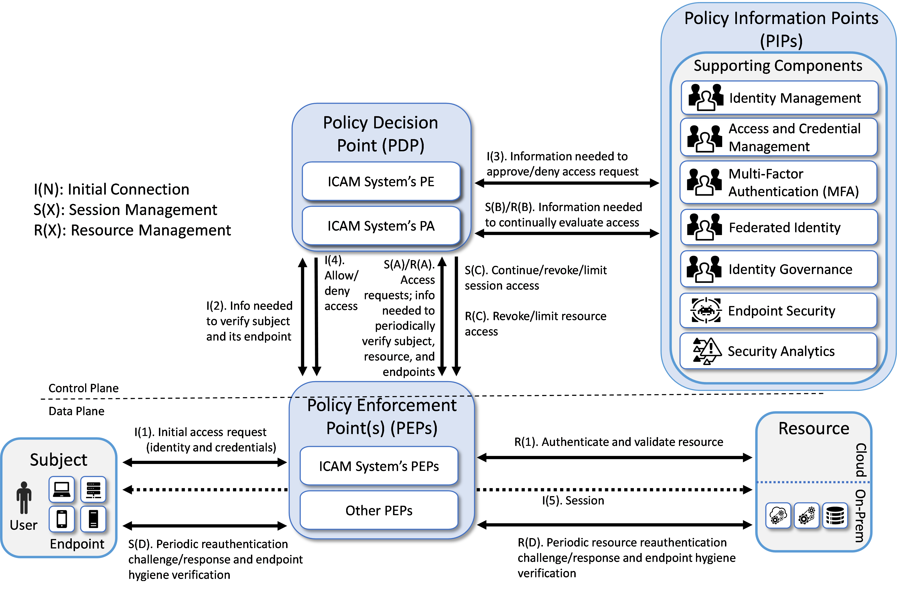
Three EIG crawl phase builds have been implemented. Each of these EIG crawl phase builds instantiates the architecture that is depicted in Figure 2 in a unique way, depending on the equipment used and the capabilities supported. The products used in each build were based on having out-of-box integration. Briefly, the three builds are as follows:
Enterprise 1 Build 1 (E1B1) uses products from Amazon Web Services, IBM, Ivanti, Mandiant, Okta, Radiant Logic, SailPoint, Tenable, and Zimperium. Certificates from DigiCert are used. The build is described in detail in the Enterprise 1 Build 1 (E1B1) section.
Enterprise 2 Build 1 (E2B1) uses products from Cisco Systems, IBM, Mandiant, Palo Alto Networks, Ping Identity, Radiant Logic, SailPoint, and Tenable. Certificates from DigiCert are used. The build is described in detail in the Enterprise 1 Build 1 (E2B1) section.
Enterprise 3 Build 1 (E3B1) uses products from F5, Forescout, Lookout, Mandiant, Microsoft, Palo Alto Networks, PC Matic, and Tenable. Certificates from DigiCert are used. The build is described in detail in the Enterprise 3 Build 1 (E3B1) section.
EIG Run Phase#
This section of the practice guide documents the builds that have been created in the project’s EIG run phase. The EIG run phase builds upon the EIG crawl phase architecture. The EIG run phase no longer imposes the requirement that the PE and PA components are provided by the ICAM products used in the build. It also adds capabilities to the EIG crawl phase. In addition to protecting access to resources that are located on-premises, the run phase protects access to some resources that are hosted in the cloud. The EIG run phase also includes a device discovery capability, which is performed as part of the baseline. In addition to monitoring and alerting when new devices are detected, enforcement can be enabled to deny access to devices that are not compliant. The run phase also includes the capability to establish a tunnel between the requesting endpoint and the resource being accessed over which access to the resource can be brokered.
Three EIG run phase builds have been implemented. Each of these EIG run phase builds is unique, based on the equipment used and the capabilities supported. Briefly, the three builds are as follows:
Enterprise 1 Build 2 (E1B2) uses products from Amazon Web Services, IBM, Ivanti, Mandiant, Okta, Radiant Logic, SailPoint, Tenable, and Zscaler. Certificates from DigiCert are used. The build is described in detail in the Enterprise 1 Build 2 section.
Enterprise 3 Build 2 (E3B2) uses products from F5, Forescout, Mandiant, Microsoft, Palo Alto Networks, PC Matic, and Tenable. Certificates from DigiCert are used. The build is described in detail in the Enterprise 3 Build 2 section.
Enterprise 4 Build 3 (E4B3) uses products from IBM, Mandiant, Palo Alto Networks, Tenable, and VMware. Certificates from DigiCert are used. The build is described in detail in the Enterprise 4 Build 3 section.
SDP, Microsegmentation, and SASE Builds#
Unlike the EIG crawl and run phase builds, which are based on a constrained version of the general reference architecture that is depicted in Figure 2, there are no constraints on the ZTA reference architecture when used as the underlying design for a build in the SDP, microsegmentation, and SASE phase of the project. The SDP, microsegmentation, and SASE phase builds that have been implemented as part of this project are based on the general ZTA described in the General ZTA Reference Architecture section. Each of these builds is unique, based on the equipment used and the capabilities supported. Briefly, these eleven builds are as follows:
Enterprise 1 Build 3 (E1B3) uses products from Amazon Web Services, IBM, Ivanti, Mandiant, Okta, Radiant Logic, SailPoint, Tenable, and Zscaler. Certificates from DigiCert are used. The build is described in detail in the Enterprise 1 Build 3 section.
Enterprise 2 Build 3 (E2B3) uses products from Cisco Systems, IBM, Mandiant, Palo Alto Networks, Ping Identity, Radiant Logic, SailPoint, Tenable, and VMware. Certificates from DigiCert are used. The build is described in detail in the Enterprise 2 Build 3 section.
Enterprise 3 Build 3 (E3B3) uses products from F5, Forescout, Mandiant, Microsoft, Palo Alto Networks, PC Matic, and Tenable. Certificates from DigiCert are used. The build is described in detail in the Enterprise 3 Build 3 section.
Enterprise 1 Build 4 (E1B4) uses products from Amazon Web Services, Appgate, IBM, Ivanti, Mandiant, Okta, Radiant Logic, SailPoint, Tenable, and Zimperium. Certificates from DigiCert are used. The build is described in detail in the Enterprise 1 Build 4 section.
Enterprise 2 Build 4 (E2B4) uses products from Google Cloud, IBM, Mandiant, Okta, Radiant Logic, SailPoint, Symantec by Broadcom, Tenable, and VMware. Certificates from DigiCert are also used. The build is described in detail in the Enterprise 2 Build 4 section.
Enterprise 3 Build 4 (E3B4) uses products from F5, Forescout, Mandiant, Microsoft, Palo Alto Networks, and Tenable. Certificates from DigiCert are also used. The build is described in detail in the Enterprise 3 Build 4 section.
Enterprise 4 Build 4 (E4B4) uses products from IBM, Mandiant, Tenable, and VMware. Certificates from DigiCert are also used. The build is described in detail in the Enterprise 4 Build 4 section.
Enterprise 1 Build 5 (E1B5) uses products from Amazon Web Services, IBM, Mandiant, Okta, Palo Alto Networks (PAN), Radiant Logic, SailPoint, and Tenable. Certificates from DigiCert are also used. The build is described in detail in the Enterprise 1 Build 5 section.
Enterprise 2 Build 5 (E2B5) uses products from Google Cloud, IBM, Lookout, Mandiant, Okta, Radiant Logic, SailPoint, Tenable, and VMware. Certificates from DigiCert are also used. The build is described in detail in the Enterprise 2 Build 5 section.
Enterprise 3 Build 5 (E3B5) uses products from Mandiant, Microsoft, and Tenable. Certificates from DigiCert are also used. The build is described in detail in the Enterprise 3 Build 5 section.
Enterprise 1 Build 6 (E1B6) uses products from Amazon Web Services, IBM, Ivanti, Mandiant, Okta, Radiant Logic, SailPoint, and Tenable. Certificates from DigiCert are also used. The build is described in detail in the Enterprise 1 Build 6 section.
Table 1 maps each build to the type of architecture it instantiates.
Build |
Policy Engines |
ZTA Architecture Instantiated |
|---|---|---|
E1B1 |
Okta Identity Cloud, Ivanti Access ZSO |
EIG Crawl |
E2B1 |
Ping Identity Ping Federate |
EIG Crawl |
E3B1 |
Azure AD (Conditional Access) (Note that the product name Azure AD was later changed to Entra ID) |
EIG Crawl |
E1B2 |
Zscaler ZPA Central Authority (CA) |
EIG Run |
E3B2 |
Microsoft Azure AD (Conditional Access), Microsoft Intune, Forescout eyeControl Forescout eyeExtend |
EIG Run |
E1B3 |
Zscaler ZPA Central Authority (CA) |
SDP |
E2B3 |
Ping Identity PingFederate, Cisco ISE, Cisco Secure Workload |
Microsegmentation |
E3B3 |
Microsoft Azure AD (Conditional Access), Microsoft Intune, Microsoft Sentinel, Forescout eyeControl, Forescout eyeExtend |
SDP and Microsegmentation |
E4B3 |
IBM Security Verify |
EIG Run |
E1B4 |
Appgate SDP Controller |
SDP |
E2B4 |
Symantec Cloud Secure Web Gateway (Cloud SWG), Symantec ZTNA, Symantec Cloud Access Security Broker (CASB) |
SDP and SASE |
E3B4 |
F5 BIG-IP, F5 NGINX Plus, Forescout eyeControl, Forescout eyeExtend |
SDP |
E4B4 |
VMware Workspace ONE Access, VMware Unified Access Gateway (UAG), VMware NSX-T |
SDP, Microsegmentation, and EIG |
E1B5 |
PAN NGFW, PAN Prisma Access |
SASE and Microsegmentation |
E2B5 |
Lookout SSE, Okta Identity Cloud |
SDP and SASE |
E3B5 |
Microsoft Entra Conditional Access (formerly Azure AD Conditional Access), Microsoft Security Service Edge,Microsoft Sentinel |
SDP and SASE |
E1B6 |
Ivanti Neurons for Zero Trust Access (nZTA) |
SDP and Microsegmentation |
ZTA Laboratory Physical Architecture#
Figure 3 depicts the high-level physical architecture of the ZTA laboratory environment, which is located at the NCCoE site. The NCCoE provides VM resources and physical infrastructure for the ZTA lab. It also hosts GitLab, which is used as a DevOps platform that stores Terraform and Ansible configuration information and provides version control for configuration file and change management activities. The NCCoE hosts all the collaborators’ ZTA-related software for Enterprises 1, 2, 3, and 4. The NCCoE also provides connectivity from the ZTA lab to the NIST Data Center, which provides connectivity to the internet and public IP spaces (both IPv4 and IPv6).
Access to and from the ZTA lab from within ITOps is protected by a Palo Alto Networks Next Generation Firewall (PA-5250). (The brick box icons in Figure 3 represent firewalls.) The ZTA lab network infrastructure includes four independent enterprises (Enterprises 1, 2, 3, and 4), a branch office used only by Enterprise 1, a coffee shop that all enterprises can use, a management and orchestration domain, and an emulated WAN/internet service provider. The emulated WAN service provider provides connectivity among all the ZTA laboratory networks, i.e., among all the enterprises, the coffee shop, the branch office, and the management and orchestration domain. Another Palo Alto Networks PA-5250 firewall that is split into separate virtual systems protects the network perimeters of each of the enterprises and the branch office. The emulated WAN service provider also connects the ZTA laboratory network to ITOps. The ZTA laboratory network has access to cloud services provided by AWS, Azure, and Google Cloud, as well as connectivity to SaaS services provided by various collaborators, all of which are available via the internet.
Each enterprise within the NCCoE laboratory environment is protected by a firewall and has both IPv4 and IPv6 (dual stack) configured. Each of the enterprises is equipped with a baseline architecture that is intended to represent the typical environment of an enterprise before a zero trust deployment model is instantiated.
Figure 3 - Physical Architecture of ZTA Lab
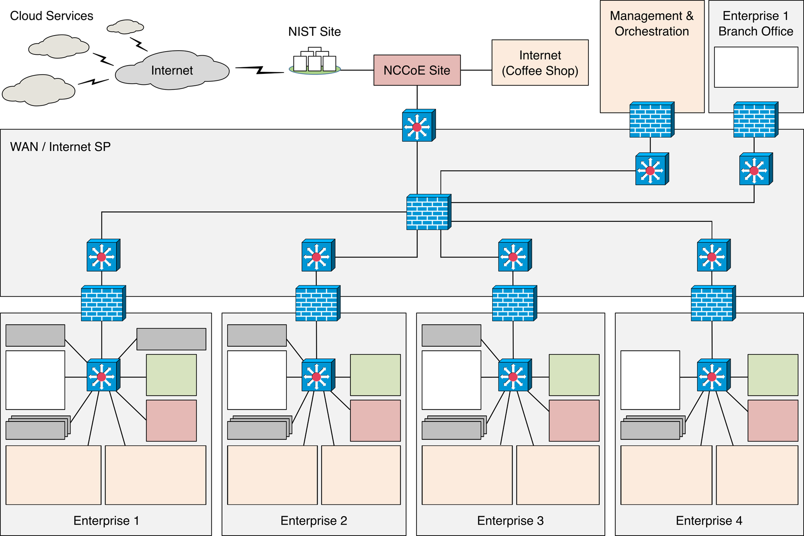
The details of the baseline physical architecture of enterprise 1, enterprise 1 branch office, enterprises 2, 3, and 4, the management and orchestration domain, and the coffee shop, as well as the baseline software running on this physical architecture are described in the subsections below. The details of each of the builds that occupy Enterprises 1, 2, 3, and 4 are provided in Build Architecture Details. (See Table 1). For a fully detailed diagram, please review the full architecture diagram.
{kind=link}
Enterprise 1#
Figure 4 is a close-up of the high-level physical architecture of Enterprise 1 in the NCCoE laboratory baseline environment. Its components are described in the subsections below. See Enterprise 1 Build 1 (E1B1), Enterprise 1 Build 2 (E1B2), Enterprise 1 Build 3 (E1B3), Enterprise 1 Build 4 (E1B4), Enterprise 1 Build 5 (E1B5), and Enterprise 1 Build 6 (E1B6) for detailed descriptions of the ZTA components used in the builds that have been implemented in Enterprise 1.
Figure 4 - Physical Architecture of Enterprise 1
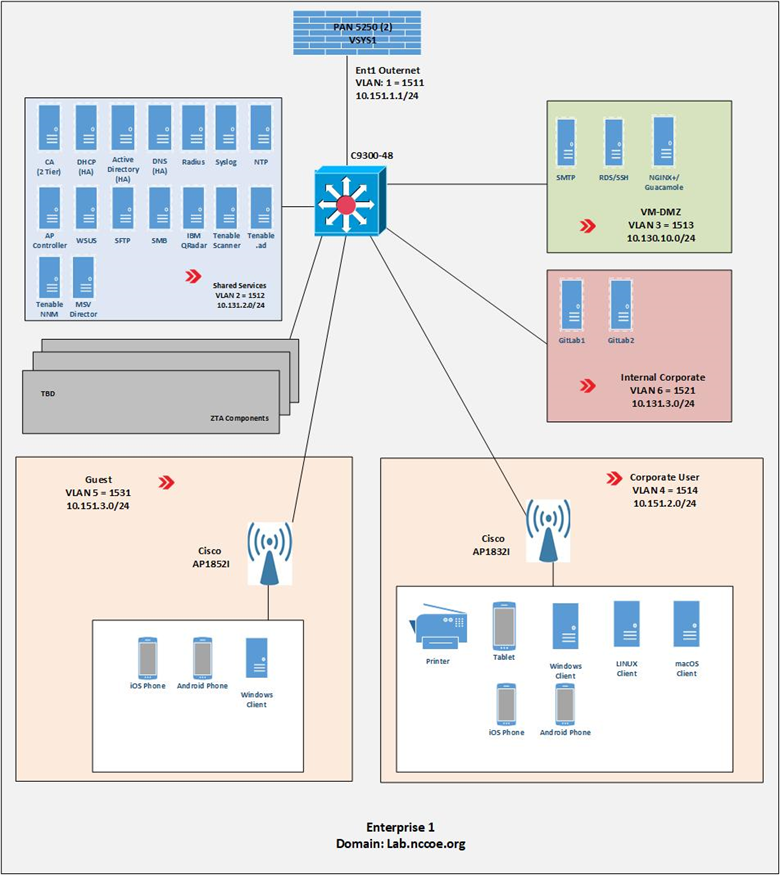
Firewall#
Enterprise 1, like Enterprise 2, Enterprise 3, Enterprise 4, Enterprise 1 Branch Office, and the management and orchestration domain, is protected by a Palo Alto Networks 5250 firewall. This is one physical firewall that provides independent virtual firewalls to protect each of the above domains. Each enterprise is configured with an autonomous ZTA solution set. These virtual firewalls provide firewall and gateway capabilities, support a site-to-site Internet Protocol Security (IPsec) connection between the Enterprise 1 Branch Office and Enterprise 1, provide a remote access VPN (Global Protect) to sites, filter traffic among various internal and external subnets, provide IPv4 and IPv6 routing, and block all inbound traffic unless explicitly allowed, e.g., for communication with cloud resources. These firewalls are integrated with AD to leverage the enterprise user directory store for their respective domains.
Switch#
Enterprise 1 uses a Cisco C9300 multilayer switch to provide internal network connectivity within the enterprise. It provides layer 2/3 interfaces for each virtual local area network (VLAN) subnetwork with 802.1q trunking. Both IPv4 and IPv6 addresses are assigned. This switch is integrated with the Remote Authentication Dial-In User Service (RADIUS) networking protocol to provide centralized authentication, authorization, and accounting (AAA) management for users requesting access to an Enterprise 1 network service. The switch hosts physical wireless access points and allows connections for their virtual controllers. It also provides wired access for endpoints such as laptops within the lab.
ZTA Components Specific to Enterprise 1#
Enterprise 1 contains VLANs that pertain specifically to enterprise 1’s ZTA build. See Enterprise 1 Build 1 (E1B1) for a detailed description of the ZTA components used in Enterprise 1 Build 1 (E1B1) and Enterprise 1 Build 2 (E1B2) for a detailed description of the ZTA components used in Enterprise 1 Build 2 (E1B2).
Demilitarized Zone (DMZ) Subnet#
Enterprise 1’s demilitarized zone (DMZ) is a virtual subnet that separates the rest of the Enterprise 1 network from the internet. The DMZ includes web applications and other services that Enterprise 1 makes available to users on the public internet. For example, the DMZ subnet includes Jump-box Remote Desktop Server (RDS) and Secure Shell (SSH) protocol to provide some collaborators with remote access to Enterprise 1. It also includes applications such as Simple Mail Transfer Protocol (SMTP), NGINX Plus, and Apache Guacamole.
Internal Corporate Subnet#
The internal corporate subnet is where applications that support Enterprise 1’s internal services reside. For example, the internal corporate subnet includes applications such as GitLab.
Corporate User Subnet#
The corporate user subnet is where users and devices such as mobile devices (iOS and Android), tablets, Windows clients, macOS clients, Linux clients, and printers reside. Some of these devices are connected via wires to the C9300 switch, while others are connected via Wi-Fi using the Cisco AP 18321 wireless access point.
Guest Subnet#
The guest subnet is where guests reside. Guests are users who don’t have any sort of network ID and are not authorized to access any enterprise resources. They use their own devices rather than corporate-owned or corporate-managed devices. Devices on the guest subnet include mobile devices, tablets, Windows clients, macOS clients, and Linux clients. The guest subnet allows for BYOD access, with all devices connecting via Wi-Fi using the Cisco AP 18321 wireless access point.
Baseline Applications#
The following applications were installed and configured as part of the baseline architecture to represent the types of applications that would be found in a typical brownfield enterprise environment. These applications serve as the enterprise resources to which the ZTA is managing access.
Guacamole#
Apache Guacamole is a remote desktop solution that supports a wide range of protocols such as SSH and Remote Desktop Protocol (RDP).
GitLab#
GitLab is a DevOps tool that allows software developers to develop, test, and operate software in one application. We used GitLab as an enterprise application being accessed by end users.
NGINX Plus#
NGINX Plus provides HTTP, reverse proxy, and load balancer services.
Enterprise 1 Branch Office#
Figure 6 is a closeup of the high-level physical architecture of the Enterprise 1 Branch Office in the NCCoE laboratory environment. The Enterprise 1 Branch Office has three main components: a firewall, a switch, and a subnet for corporate users.
Figure 6 - Physical Architecture of the Enterprise 1 Branch Office
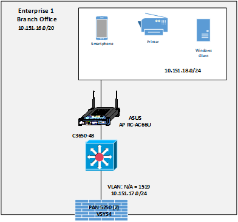
Branch Firewall#
One of the independent virtual firewalls provided by the Palo Alto Networks 5250 physical firewall is used for the Enterprise 1 Branch Office. It provides firewall and gateway capabilities, connecting the Branch Office to Enterprise 1 via the emulated WAN/internet service provider and supports a site-to-site VPN IPsec connection from the Branch Office to Enterprise 1. This firewall is integrated with the AD of Enterprise 1 so it can leverage Enterprise 1’s user directory store.
Branch Switch#
The Branch Office includes a Cisco C3650 multilayer switch that provides internal network connectivity within the Branch Office. It is integrated with Enterprise 1’s AAA (RADIUS) server to leverage Enterprise 1’s authentication and authorization services.
Corporate Users Subnet#
The corporate users subnet at the Branch Office is where users and devices such as mobile devices, tablets, Windows clients, and printers reside. Some of these devices are connected via wires to the Cisco 3650 switch, while others are connected via Wi-Fi using an ASUS RC-AC66U wireless access point.
Enterprise 2#
The high-level physical architecture of Enterprise 2 is the same as that of Enterprise 1, except Enterprise 2 does not have an associated branch office. The baseline network topology, hardware, and software of Enterprise 2 are configured the same as Enterprise 1’s. Enterprise 2 leverages the same setup as Enterprise 1 using the Palo Alto Networks NGFW and Cisco switches. It also includes the same setup and capabilities as Enterprise 1 with respect to its DMZ, internal corporate subnetwork, corporate user subnetwork, guest subnetwork, shared services, and baseline applications. The only differences between Enterprise 2 and Enterprise 1 are with respect to the on-premises and cloud-based ZTA components used in each enterprise. See Enterprise 2 Build 1 (E2B1), Enterprise 2 Build 3 (E2B3), Enterprise 2 Build 4 (E2B4), and Enterprise 2 Build 5 (E2B5) for detailed descriptions of the ZTA components used in the builds that have been implemented in Enterprise 2.
Enterprise 3#
The high-level physical architecture of Enterprise 3 is the same as that of Enterprise 2. The only differences between Enterprise 3 and Enterprise 2 are with respect to the on-premises and cloud-based ZTA components used in each enterprise. See Enterprise 3 Build 1 (E3B1), Enterprise 3 Build 2 (E3B2), Enterprise 3 Build 3 (E3B3), Enterprise 3 Build 4 (E3B4), and Enterprise 3 Build 5 (E3B5) for a detailed description of the ZTA components used in the builds that have been implemented in Enterprise 3.
Enterprise 4#
The high-level physical architecture of Enterprise 4 is similar to Enterprise 2 except it is hosted on a different VMware farm from Enterprises 1-3. There are also differences between Enterprise 4 and Enterprise 2 with respect to the on-premises and cloud-based ZTA components used in each enterprise. See Enterprise 4 Build 3 (E4B3) and Enterprise 4 Build 4 (E4B4) for a detailed description of the ZTA components used in the build that has been implemented in Enterprise 4.
Figure 7 is a close-up of the high-level physical architecture of Enterprise 4 in the NCCoE laboratory baseline environment. Its components are described in the subsections below.
Figure 7 - Enterprise 4 Physical Infrastructure
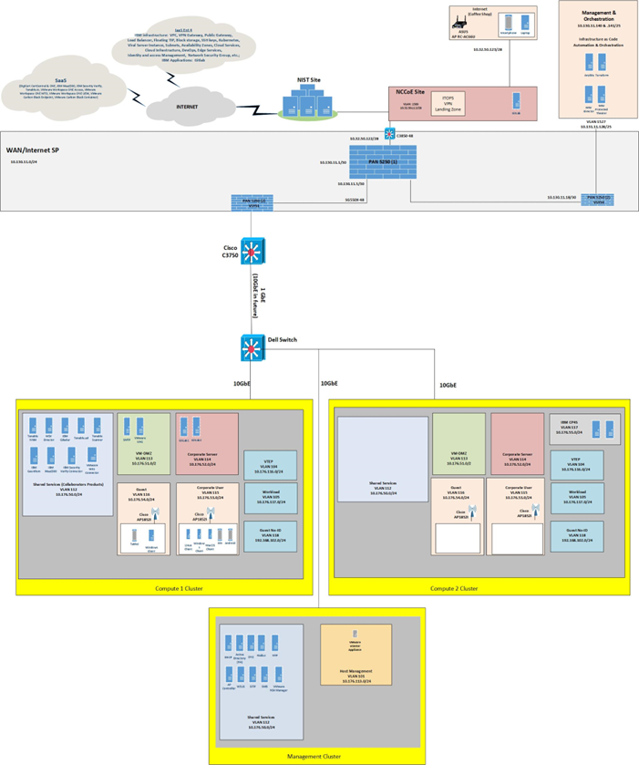
Virtual Infrastructure#
Virtual Infrastructure for Enterprise 4 is provided via three VMware virtual storage area network (vSAN) clusters, with two clusters hosting compute services and one cluster hosting management services. Each cluster is connected to a 10GbE fabric served by a Dell S4048T-ON top-of-rack BASE-T switch with separate VLANs for vMotion, vSAN, and Management functions. Each cluster is running VMware vSphere 8.0 and is managed with a single VCenter server instance under a single Datacenter. The VMware clusters connect back to the NIST network using the same firewall and switch in Enterprises 1-3.
Coffee Shop#
Figure 8 is a closeup of the high-level physical architecture of the coffee shop in the NCCoE laboratory environment. As shown, the coffee shop provides users and mobile devices (e.g., smartphones and laptops) wireless access to the internet via an ASUS RC-AC66U access point.
Figure 8 - Physical Architecture of the Coffee Shop
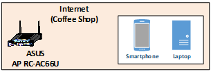
Management and Orchestration Domain#
The management and orchestration domain, as depicted in Figure 9, includes components that support Infrastructure as Code (IaC) automation and orchestration across the ZTA lab environment. It includes Terraform, which is used to automate the setup of VMs across the four enterprises, and Ansible, which automates the setup of VMs and services such as DHCP, DNS, and AD across all four enterprises. It also hosts the Mandiant MSV Director and the MSV Protected Theater.
Figure 9 - Physical Architecture of the Management and Orchestration Domain
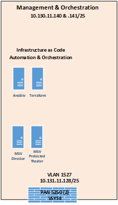
Emulated WAN Service Provider#
A subnetwork within the ZTA laboratory network is leveraged to emulate a WAN service provider. The emulated WAN service provider using a Cisco SG550X switch and a Palo Alto Networks 5250 NGFW provides connectivity among all the ZTA laboratory network domains, i.e., the enterprises, the coffee shop, the branch office, and the management and orchestration domain. It also connects the ZTA laboratory network to ITOps, which provides connectivity to the internet. Via the internet, the emulated WAN services provide the ZTA lab network with connectivity to cloud services.
Cloud Services#
As mentioned, the NCCoE lab environment has access to various cloud services via the internet. The cloud services that have been set up are described in this section.
IaaS - Amazon Web Services (AWS)#
Figure 10 depicts the physical architecture of the AWS infrastructure that has been set up for use by Enterprise 1. As shown, the NCCoE ZTA lab is connected to AWS via a site-to-site VPN, and work is underway to set up a direct connection between the NCCoE ZTA lab and AWS as well. Both a production VPC (labeled Ent 1 Prod VPC) and a management VPC (labeled Ent 1 Mgmt VPC) have been set up within AWS for Enterprise 1 to use. There is a transit gateway (TGW) for routing traffic between the production and management VPCs, and there is also an NCCoE TGW within AWS. CloudFormation was used to set up the production and management VPC infrastructure within AWS through the NCCoE and Enterprise TGWs. The TGW acts as a hub for routing traffic between production and management VPCs and includes multiple routing tables for secure routing between the VPCs.
Figure 10 - Physical Architecture of the AWS Infrastructure Used by Enterprise 1
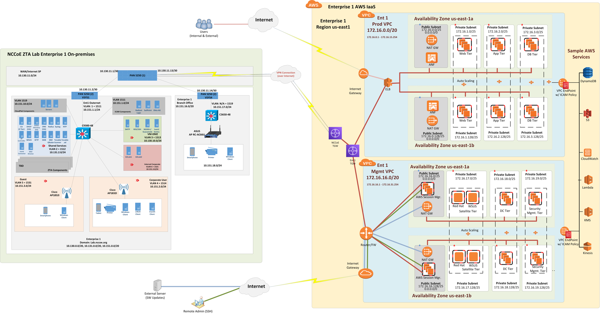
The production VPC has both a public subnetwork and three private subnetworks in each availability zone. The public subnetwork is used for connecting external users to the production VPC. The private subnetworks have EC2s that can host web, application, and database tiers.
The management VPC also has a public subnetwork and three private subnetworks in each availability zone. The public subnetwork is used to support software updates and to enable administrators and other authorized internal staff who are located remotely to SSH into cloud components. The private subnetworks include a satellite tier, domain controller tier, and security management tier.
Each VPC uses two availability zones for redundancy and high availability. Each availability zone uses automatic scaling as needed.
IaaS - Azure#
Figure 11 depicts the physical architecture of the Azure IaaS that has been set up for use by Enterprise 3. As shown, the NCCoE ZTA lab is connected to Azure IaaS via a site-to-site VPN. If coming from on-premises through the site-to-site VPN into Azure IaaS, connections go through the hub virtual network before getting to the application virtual networks for both the public-facing and private applications. The hub virtual network consists of the gateway subnet, the firewall subnet, and the bastion subnet. The gateway subnet consists of virtual network gateways in multiple availability zones. The firewall subnet consists of firewalls in multiple availability zones. The bastion subnet consists of Azure Bastion in multiple availability zones.
The public application virtual network consists of a gateway subnet, an application subnet, and utility, web, and data subnets. Each of these subnets is secured by network security group (NSG). The gateway subnet consists of application gateways in multiple availability zones and WAF policies. The application subnet hosts the virtual machines and the applications, all of which are secured by application security groups.
The private application virtual network consists of a gateway subnet and an application subnet. Each of these subnets is secured by NSG. The gateway subnet consists of application gateways in multiple availability zones and WAF policies. The application subnet hosts the virtual machines and the applications, as well as application proxies, all of which are secured by application security groups. The application proxies are meant to be used by remote users connecting to private applications through the internet.
Traffic between subnets is allowed only if the NSGs on the subnets allow it. With the zero trust design, traffic between subnets should not be assumed; it must be explicitly granted.
Figure 11 - Physical Architecture of the Azure Infrastructure Used by Enterprise 3
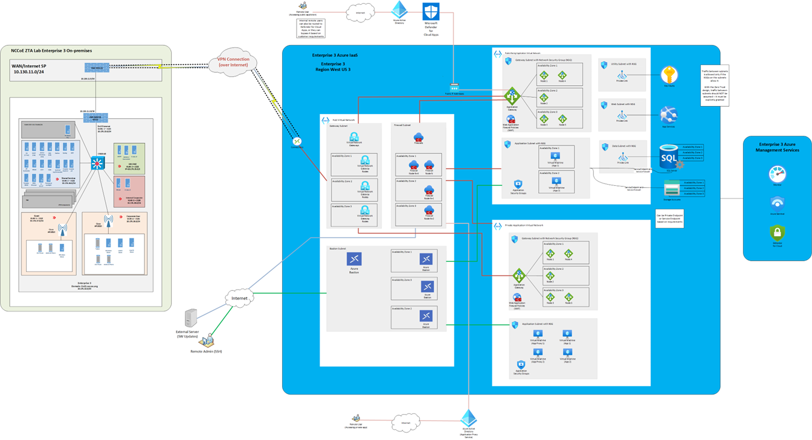
IaaS - IBM#
Figure 12 depicts the physical architecture of the IBM IaaS that has been set up for use by Enterprise 4. As shown, the NCCoE ZTA lab is connected to IBM Cloud via a site-to-site VPN, and work is underway to set up a direct connection between the NCCoE ZTA lab and IBM Cloud as well. A VPC (labeled Ent 4 VPC) and a Classic Infrastructure VPC have been set up within IBM Cloud for Enterprise 4 to use. There is an implicit route setup for securely routing traffic between the Classic Infrastructure and Ent 4 VPCs.
Two types of network access controls have been set up for VPC security: ACLs and Security Groups. An ACL is used to limit who can access a particular subnet within the VPC. A Security Group is a collection of firewall rules that specify which traffic to allow or deny for one or more virtual server instances. The Ent 4 VPC uses two zones for redundancy and high availability. Each zone has two subnets with private IP addresses. Additionally, a public gateway is set up. The Virtual Server Instances (VSIs), also known as virtual servers have been set up for hosting applications such as GitLab. A Classic Infrastructure VPC is set up that includes Bare Metal, VSIs, Load Balancers, and Gateway Applications.
Also, for observability, tools such as IBM Log Analysis, IBM Cloud Activity Tracker, and IBM Cloud Monitoring are used.
Figure 12 - Physical Architecture of the IBM Cloud Infrastructure Used by Enterprise 4
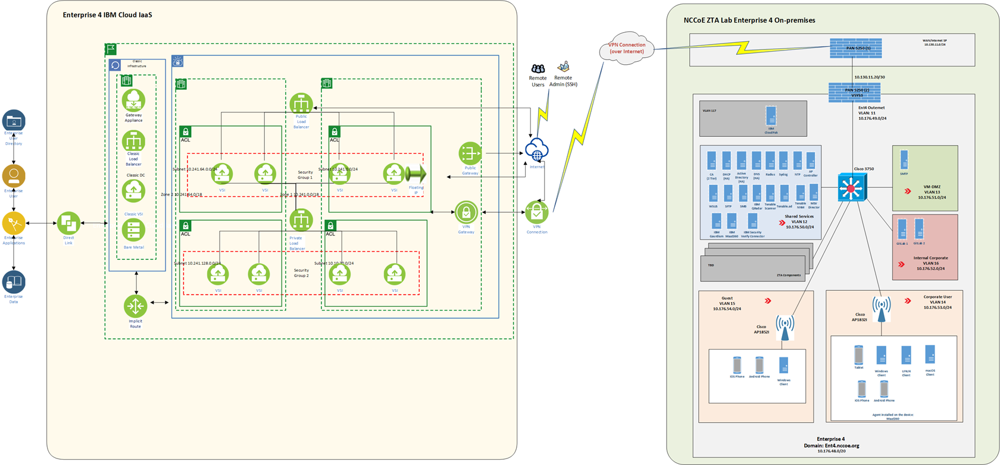
IaaS - Google#
Figure 13 depicts the physical architecture of the Google Cloud that has been set up for use by Enterprise 2. As shown, the NCCoE ZTA lab is connected to Google Cloud via a site-to-site VPN. The figure depicts user traffic that is destined for resources that reside in a Google Cloud VPC. Users will access applications via a public DNS domain name that points to a Cloud Load Balancer. As the user traffic transits the Cloud Load Balancer, it will also pass through a reverse proxy, which is labeled Identity Aware Proxy in Figure 13. This proxy allows for access controls to be applied to the user traffic via the Access Context Manager.
User identities can reside in Google Cloud Identity, the on-premises IdP, or the SaaS Identity Provider. For Enterprise 2, Okta is used as the IdP. An IAM access role is combined with context-aware access policy to allow or deny access to resources. Context-aware access policies set in Access Context Manager can include device posture collected from a device inventory such as from a mobile device management system.
Traffic is then routed to the appropriate VPC and application within Google Cloud, to another cloud, or to an on-premises resource using a Hybrid Network Endpoint Group with an IP destination that is outside of Google Cloud. This traffic transmission is facilitated via a Cloud VPN connection using an IPsec tunnel.
Figure 13 - Physical Architecture of the Google Cloud Infrastructure Used by Enterprise 2
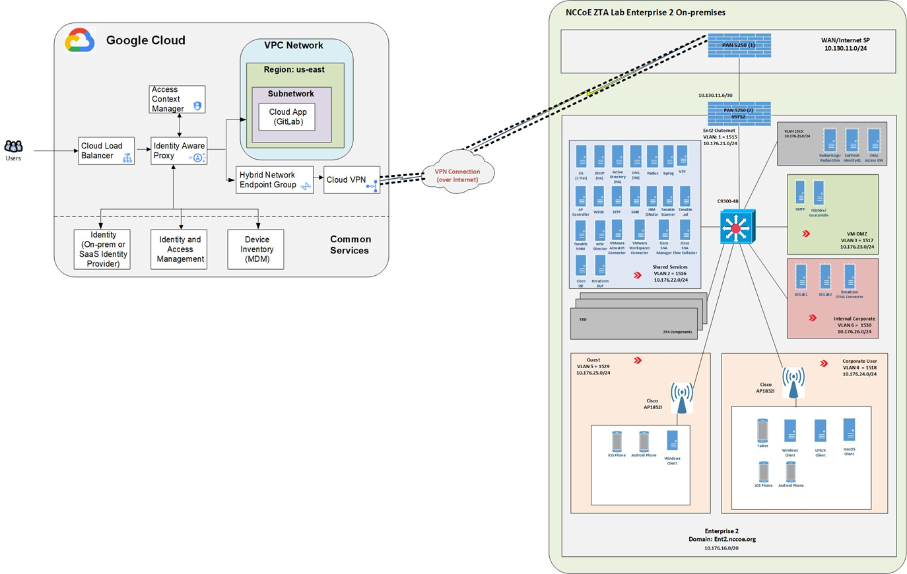
SaaS#
The project is also using collaborators’ ZTA SaaS offerings. The SaaS-based ZTA products used are listed in the Build Architecture Details describing each build.
Phase 0 Baseline Security Capability Deployment#
We began our project by building the ZTA laboratory physical architecture that is described in the ZTA Laboratory Physical Architecture section and populating it with the various applications and services that would be expected in a conventional enterprise environment to create the four baseline enterprise architectures that are described in the ZTA Laboratory Physical Architecture section. Next, as Phase 0 of our effort, we deployed a set of security analytics tools to augment the set of shared services and conventional security tools that had already been deployed as part of our four baseline architectures.
The security analytics capabilities deployed in Phase 0 of our effort included SIEM components, as well as tools for vulnerability scanning and assessment, security validation, and discovery. Specifically, the following security analytics products were deployed:
IBM QRadar XDR SIEM was deployed in enterprises 1, 2, and 4; the Microsoft Sentinel SIEM was deployed in enterprise 3
Tenable.io, Tenable.ad, and Tenable NNM vulnerability scanning and assessment tools were deployed in enterprises 1, 2, 3, and 4
Mandiant Security Validation was deployed in enterprises 1, 2, 3, and 4
Forescout eyeSight discovery tool was deployed in enterprise 3